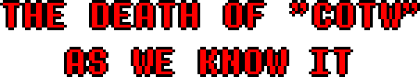
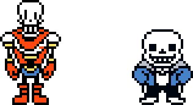
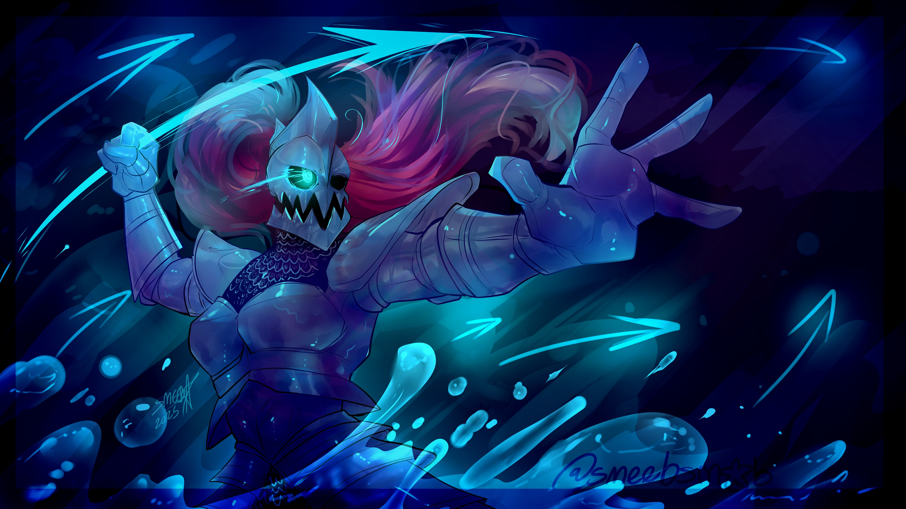
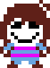
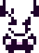
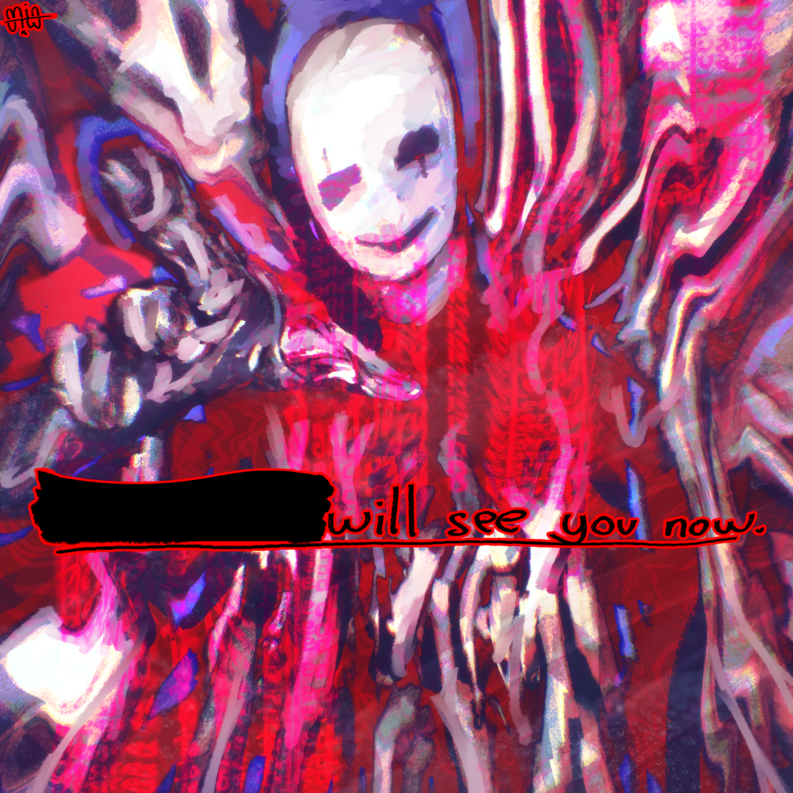
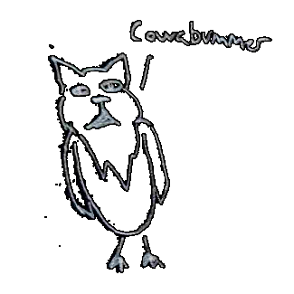
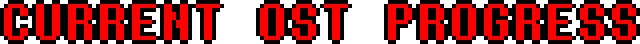

Hey there, it's been a while.
I and many others on the team have wanted to share something for a long time now.
Many of you may have noticed that our socials have been getting a lot more red in recent times.
That's not necessarily a bad thing. Red too is beautiful, if you look at it with an open mind.
And with it, it brought a much needed change.

This was something you probably could have predicted all the way at the start of the year.
For a long time, this project was trying to find a way to "make Call of the Void work" by adding a build-up to the main thing.
That is, until we found that making that build-up was far more enjoyable than the rest.
And so we made more of it, and then even more, and then even even more until we basically forgot what we were building up to.

Some major changes were needed. And that is why we eventually decided to completely abandon the idea of Call of the Void.
Sans with an Ipad? Papyrus coming back as a Lost Soul? I mean hell, even the idea of interacting with ██████ is completely gone.
Wanna know a fun fact?
Originally, Undyne was only included in the game so that she can be turned into extractor juice later.
I'm not kidding after the fight she was going to get teleported away and killed off screen isn't that fun.
Of course, this was later refined but you get what my point is.
On that topic, since her inclusion in the project is going to be COMPLETELY different now, her scrapped battle song has now been released.
I think you should maybe listen to it okay

Spear of JusticeBut what now?
If all of the elements from Call of the Void are scrapped, how will the game conclude now? That's the fun part, I don't have to tell you.

██████ is no longer the main antagonist. He will not appear in the game at all. Look I'm even Tobycore now I'm not even saying his name anymore.
Though, if the current antagonist met him, I think they would form a really good one-sided friendship.
 Intro [Concept]
Intro [Concept]
It would be one-sided because they stole his fucking lines from the demo.

Oh yeah, his battle is also scrapped now for obvious reasons.
We originally weren't going to post this, but ace came in clutch and managed to finish it in time.

PRIME REALITYYes, we were going to include PRIME REALITY, despite the fact that I really do not like the concept of it.
It was going to be styled very much like Photoshop Flowey, just on your desktop and stuff.
Yeah no I realised mid writing this that I can't reveal all that much because it includes one major OC that will still appear in the game.

But on that topic, OCs, aren't those fun?
I do realise that we haven't shown nearly enough of them yet for you to grow attached to them, but I'm sure you'll love them eventually.
While Chapter 1 is no longer going to come out in 2025, we do hope for a Q2-Q3 2026 release.
Now I would say that spriting is doing great, I would say that coding is doing great, but that really doesn't tell you a whole lot, does it?
I think there's only one real way to "count" progress, and that would be in terms of how much of the OST is done.
So here I present the AWESOME PLACEK NUMBERS!

CHAPTER 1: 52,08%
CHAPTER 2: 20,58%
CHAPTER 3: 23,33%
Thank you, this is the end of the AWESOME PLACEK NUMBERS. It will return next devlog.